HOME/ |
FRISK/ |
BOSSES/ |
AÇÕES/ |
CRIADOR |

MUFFET
Muffet é uma aranha que administra uma confeitaria na Hotland. Ela acredita que os humanos maltratam as aranhas e tenta derrotar Frisk para arrecadar dinheiro e proteger sua espécie. Se Frisk comprar um item dela ou comer um donut de aranha, Muffet percebe que foi enganada sobre o protagonista e encerra a luta em paz.
TEMA DA BATALHA
VOLTAR


História detalhada
Muffet é uma aranha que administra uma confeitaria na região de Hotland. Ela trabalha para sustentar todas as aranhas do Subsolo, vendendo doces e outros produtos preparados por elas.
Ao encontrar Frisk, Muffet acredita que o humano representa uma ameaça para sua espécie. Convencida por rumores espalhados por Mettaton, ela decide enfrentá-lo para proteger sua comunidade e arrecadar dinheiro para as aranhas.
Durante a batalha, Muffet utiliza teias para prender o jogador e convoca pequenas aranhas e um enorme bolo de confeitaria para atacar. O combate mistura ataques rápidos com elementos de ritmo e estratégia.
Se Frisk comprar um item das aranhas anteriormente ou sobreviver tempo suficiente à batalha, Muffet percebe que o humano não deseja fazer mal às aranhas e encerra o combate de forma amigável.
Na Rota Pacifista Verdadeira, Muffet permanece ao lado dos outros monstros e atravessa a barreira para viver na superfície, onde continua administrando seus negócios junto de sua comunidade.
Muffet é conhecida por sua personalidade elegante, inteligente e um pouco gananciosa. Apesar disso, demonstra grande dedicação às aranhas e faz de tudo para garantir o bem-estar de sua família.